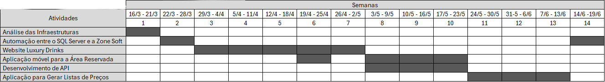

Resumo do Estágio
Estágio Curricular na Luxury Drinks Portugal
Este website apresenta os principais projetos desenvolvidos durante a Formação em Contexto de Trabalho realizada na Luxury Drinks Portugal, no âmbito da Licenciatura em Engenharia Informática do Instituto Superior Politécnico de Gaya. Durante as 14 semanas de estágio foram desenvolvidas soluções para automação de processos, integração de APIs, comércio eletrónico, aplicações móveis e desenvolvimento web.
Áreas de Intervenção
Durante o estágio foram desenvolvidos projetos em diferentes áreas tecnológicas para responder às necessidades da empresa.
Desenvolvimento Web
Desenvolvimento e manutenção do website da Luxury Drinks Portugal recorrendo a WordPress, WooCommerce, HTML, CSS, JavaScript e PHP.
Desenvolvimento Mobile
Desenvolvimento de uma aplicação móvel em Flutter para acesso à Área Reservada da empresa, permitindo consultar informação através de APIs.
Automação de Processos
Desenvolvimento de aplicações em Python para automatizar tarefas administrativas, sincronização de dados e geração automática de listas de preços.
Bases de Dados
Utilização de SQL Server para organização, consulta e integração da informação utilizada pelas aplicações desenvolvidas.
Entidades Envolvidas
A Formação em Contexto de Trabalho foi desenvolvida em parceria entre o Instituto Superior Politécnico de Gaya e a Luxury Drinks Portugal.
Cronograma do Estágio
Cronograma das atividades desenvolvidas durante as 14 semanas de Formação em Contexto de Trabalho.
